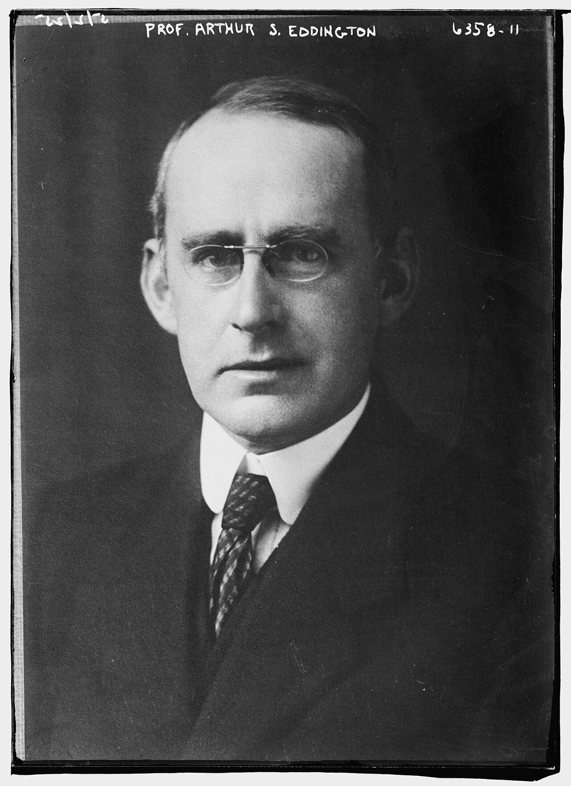

The puzzle of the Sun's energy
Why hasn't the Sun burned out?
Prior knowledge
- A nucleus has less mass than its free nucleons, and $E = \Delta m \cdot c^2$ gives the energychapter Mass defect and binding energy
- Power is energy per time, $P = E/t$ (earlier physics courses)
Core path: follow the steps in order. Besides calculations, the core path includes investigations, explanations and graphs. Tasks marked Optional give extra practice. Optional tasks: 3.
Think about it
Every second, the Sun sends $3.83 \cdot 10^{26}\ \text{J}$ of energy into space, more than humankind uses in half a million years. Rocks on Earth contain fossils of living things that needed sunlight hundreds of millions of years ago, and the oldest rocks and meteorites are billions of years old. Around 1860, the best physicists in the world could not explain how any fuel could last that long.
What could keep the Sun shining for billions of years?
Review: mass and energy
Predict
Make your predictions before investigating 2 questions
Prediction 1: a Sun made of coal
Prediction 2: the best explanation
Investigate
Investigation 1: test the chemical explanation
Statistical data · The Sun's mass and luminosity: IAU 2015 nominal values as given in Wikipedia, Sun; heat of combustion of anthracite coal: Wikipedia, Heat of combustion (both checked 1 November 2026).
Test prediction 1 with real values. The coal is the best case: anthracite, and the oxygen it needs is not counted.
| Quantity | Value |
|---|---|
| mass of the Sun $M$ | $1.99 \cdot 10^{30}\ \text{kg}$ |
| luminosity of the Sun $L$ | $3.83 \cdot 10^{26}\ \text{W}$ |
| heat of combustion of anthracite $q$ | $32.5\ \text{MJ/kg}$ |
| one year | $3.156 \cdot 10^{7}\ \text{s}$ |
Calculate how many years a Sun made of anthracite could shine at the power $L$. Use $E = qM$ and $t = E/L$.
Hint 1: a guiding question
First the energy: $E = qM$, with $q$ in $\text{J/kg}$.
Hint 2: what is the connection
Hint 3: an intermediate step
$t = E/L$ gives seconds; divide by $3.156 \cdot 10^{7}\ \text{s}$ per year.
Show the solution
Given
$M = 1.99 \cdot 10^{30}\ \text{kg}$, $L = 3.83 \cdot 10^{26}\ \text{W}$, $q = 32.5\ \text{MJ/kg}$
Find
the time $t$ in years
Principle
Burning releases the heat of combustion for every kilogram of fuel. At a constant power, the time is the energy divided by the power.
Formula
$$t = \frac{E}{L} = \frac{qM}{L}$$
Unit conversions
$1\ \text{W} = 1\ \text{J/s}$; $1\ \text{a} = 3.156 \cdot 10^{7}\ \text{s}$
Substitution
$$\begin{aligned} t &= \frac{3.25 \cdot 10^{7}\ \text{J/kg} \cdot 1.99 \cdot 10^{30}\ \text{kg}}{3.83 \cdot 10^{26}\ \text{J/s}} \\ &= 1.69 \cdot 10^{11}\ \text{s} \\ &= \frac{1.69 \cdot 10^{11}\ \text{s}}{3.156 \cdot 10^{7}\ \text{s/a}} = 5350\ \text{a} \end{aligned}$$
Answer
about $5000$ years ($5350$ years with these values). One significant figure is enough for an argument about orders of magnitude.
Reasonableness
Human history is longer than this, and fossils are millions of times older. Even a perfect chemical fuel cannot explain the Sun.
Investigation 2: read the historical source
Arthur Eddington, The Internal Constitution of the Stars, address to the British Association, Cardiff, 24 August 1920 (printed in Nature 106, 1920). Short extracts:
"A star is drawing on some vast reservoir of energy by means unknown to us. This reservoir can scarcely be other than the sub-atomic energy which, it is known, exists abundantly in all matter."
"[...] Aston has further shown conclusively that the mass of the helium atom is less than the sum of the masses of the 4 hydrogen atoms which enter into it."
"There is a loss of mass in the synthesis amounting to about 1 part in 120, the atomic weight of hydrogen being 1.008 and that of helium just 4."
The word synthesis means building something from parts.
Investigation 3: the story in order
Word bank
luminosity · energy source · chemical energy · gravitational contraction · radioactivity · sub-atomic energy · evidence · estimate · assumption · to last · to run out · to contradict · a conflict between
Sentence starters
- Kelvin's estimate contradicted …
- The evidence from geology suggests that …
- One possible explanation is …
- Kelvin could not have known that …
- I think the geologists / Kelvin were right, because …
Discussion: Kelvin against the geologists
Discuss with a partner, then write four or five sentences of your own. From 1862 to the 1890s, Kelvin lowered his limit for the Sun's age from about 100 million to a few tens of millions of years, while geologists and biologists needed hundreds of millions.
Who was right, and why? What did Kelvin not know? What does this story tell you about how science deals with a conflict between two kinds of evidence?
Model answer
The geologists and biologists were right about the time: the Earth and the Sun are about $4.6$ billion years old. Kelvin's estimate contradicted the evidence from rocks and fossils, but his physics was correct for the energy sources he knew, chemical burning and contraction. Kelvin could not have known about nuclear energy, which was discovered only after radioactivity in 1896. The conflict was a sign that a piece of physics was missing. One lesson is that when careful evidence from two fields disagrees, the disagreement itself can point to new science.
Assess your own answer
Tick the points your own answer already contains.
Review the theory.
Theory
Three candidate explanations
The Sun radiates the power $L = 3.83 \cdot 10^{26}\ \text{W}$, its luminosity. In the 19th century, physicists asked where this energy comes from, and how long the supply can last.
The first idea was chemical energy: perhaps the Sun burns like a giant fire. But even if the whole Sun were coal, and the oxygen came for free, it would burn out in about $5000$ years. Chemical reactions release only a few electronvolts per molecule, far too little.
In 1854 Hermann von Helmholtz proposed gravitational contraction. If the Sun slowly shrinks, its gravitational potential energy turns into heat, as when a falling stone warms the ground. William Thomson, later Lord Kelvin, calculated the consequences. In 1862 he wrote that the Sun had most probably shone on the Earth for less than $100$ million years, and in 1887 he lowered the limit to about $20$ million years.
This was a real conflict. Geologists, who studied how slowly rocks form, and biologists, who followed Darwin's theory of evolution, needed hundreds of millions of years. Kelvin's physics was correct; what he did not know was that a new form of energy existed. In 1903 Pierre Curie and Albert Laborde found that radium gives off heat without any chemical reaction, over its whole decay about $200\,000$ times as much as the same mass of burning coal. Energy was hidden inside atoms.
Key idea
The answer came in 1920. On 24 August, the astronomer Arthur Eddington spoke to the British Association for the Advancement of Science in Cardiff. He used a new measurement by the chemist Francis Aston: a helium atom has less mass than the four hydrogen atoms it could be made of. With today's AME2020 masses:
$$\begin{aligned} 4 \cdot m(^{1}\text{H}) &= 4 \cdot 1.007825\ \text{u} \\ &= 4.031300\ \text{u} \\ m(^{4}\text{He}) &= 4.002603\ \text{u} \end{aligned}$$
About $0.71\ \%$ of the mass disappears, and by $E = \Delta m \cdot c^2$ it must leave as energy. Eddington argued that a star is "drawing on some vast reservoir of energy", which "can scarcely be other than the sub-atomic energy". Turning hydrogen into helium, he showed, would easily keep the Sun shining for billions of years.
Eddington could not say how the protons fuse: by classical physics, the Sun's core was much too cold for them to overcome their electric repulsion. George Gamow explained alpha decay with quantum tunnelling in 1928; in 1929 Robert Atkinson and Fritz Houtermans applied tunnelling to stars, and in 1938–1939 Hans Bethe worked out the reactions. That is the next unit.
The lifetime of an energy source
If a source holds the energy $E$ and gives it away at the constant power $L$, it lasts for the time
$$t = \frac{E}{L}$$
For hydrogen fusion, the energy is the mass that disappears times $c^2$. If the mass $m_\text{H}$ of hydrogen is fused into helium, the energy released is
$$E = 0.0071 \cdot m_\text{H} \cdot c^2$$
For comparison, gravitational contraction can release at most about $GM^2/R$, where $M$ is the mass and $R$ the radius of the Sun, and burning gives the mass times the heat of combustion of the fuel. The three estimates are shown below on a logarithmic scale.
Words of the lesson
Back to your predictions
Compare your predictions with your calculation, the source and the theory. Then answer the opening question in one or two sentences: why hasn't the Sun burned out?
Would you change your prediction?
Examples
Once you have studied the chapter's theory, move on to the guided examples. In the first you follow a worked solution step by step; in the next ones you make the choices yourself, and the hints help if you get stuck.
Example 1
Estimate how long the Sun can shine by fusing hydrogen into helium. Use these simplifying assumptions: (1) only the hot core, about $10\ \%$ of the Sun's mass, is ever used, and we treat it as pure hydrogen that is all turned into helium; (2) $0.71\ \%$ of the fused mass becomes energy; (3) the Sun shines with today's power all the time. The Sun's mass is $M = 1.99 \cdot 10^{30}\ \text{kg}$ and its luminosity $L = 3.83 \cdot 10^{26}\ \text{W}$.
Step 1/7
Given: $M = 1.99 \cdot 10^{30}\ \text{kg}$, $L = 3.83 \cdot 10^{26}\ \text{W}$, fused fraction of the mass $10\ \% = 0.10$, mass-to-energy fraction $0.0071$, $c = 3.00 \cdot 10^{8}\ \text{m/s}$. Find: the time $t$ in years.
Step 2/7
Principle: Mass–energy equivalence gives the energy of the fused hydrogen, $E = \Delta m \cdot c^2$, where $\Delta m$ is $0.71\ \%$ of the fused mass. At a constant power, the time is the energy divided by the power.
Step 3/7
Formula: $$\begin{aligned} E &= 0.0071 \cdot 0.10 \cdot M \cdot c^2 \\ t &= \frac{E}{L} \end{aligned}$$
Step 4/7
Unit conversions: $1\ \text{W} = 1\ \text{J/s}$, so $t$ comes out in seconds. One year is $365.25 \cdot 24 \cdot 3600\ \text{s} = 3.156 \cdot 10^{7}\ \text{s}$.
Step 5/7
Substitution: $$\begin{aligned} E &= 0.0071 \cdot 0.10 \cdot 1.99 \cdot 10^{30}\ \text{kg} \\ &\quad \cdot (3.00 \cdot 10^{8}\ \text{m/s})^2 \\ &= 1.27 \cdot 10^{44}\ \text{J} \\[4pt] t &= \frac{1.27 \cdot 10^{44}\ \text{J}}{3.83 \cdot 10^{26}\ \text{J/s}} \\ &= 3.32 \cdot 10^{17}\ \text{s} \\ &= \frac{3.32 \cdot 10^{17}\ \text{s}}{3.156 \cdot 10^{7}\ \text{s/a}} \\ &= 1.05 \cdot 10^{10}\ \text{a} \end{aligned}$$
Step 6/7
Answer: about $10$ billion years ($10^{10}$ years). Only one significant figure is meaningful, because the assumption of $10\ \%$ is itself a rough estimate.
Step 7/7
Reasonableness: The result is far longer than the chemical ($5000$ years) and gravitational (about $30$ million years) estimates, and longer than the age of the Solar System, $4.6$ billion years, so the Sun is roughly in the middle of its life. Computer models of the Sun give a similar total of about $10$ billion years. The assumptions are rough in both directions: the core is not pure hydrogen and the Sun's power slowly grows, while the burning region slowly grows outwards and reaches fresh hydrogen.
Example 2: How fast does the Sun lose mass?
The Sun radiates $L = 3.83 \cdot 10^{26}\ \text{W}$. How much mass does it turn into energy every second? Use $c = 3.00 \cdot 10^{8}\ \text{m/s}$ and give the answer in kilograms.
Hint 1: a guiding question
In one second the Sun gives away the energy $E = 3.83 \cdot 10^{26}\ \text{J}$.
Hint 2: what is the connection
$E = \Delta m \cdot c^2$, so $\Delta m = E/c^2$.
Hint 3: an intermediate step
$c^2 = 9.00 \cdot 10^{16}\ \text{m}^2/\text{s}^2$.
Show the solution
Given
$L = 3.83 \cdot 10^{26}\ \text{W}$, $t = 1\ \text{s}$, $c = 3.00 \cdot 10^{8}\ \text{m/s}$
Find
the mass $\Delta m$ that becomes energy in one second
Principle
Mass–energy equivalence: the radiated energy corresponds to a lost mass $\Delta m = E/c^2$; in one second the energy is $E = Lt$.
Formula
$$\Delta m = \frac{E}{c^2} = \frac{Lt}{c^2}$$
Unit conversions
$1\ \text{W} \cdot 1\ \text{s} = 1\ \text{J}$, and $1\ \text{J} = 1\ \text{kg} \cdot \text{m}^2/\text{s}^2$, so the result is in kilograms.
Substitution
$$\begin{aligned} \Delta m &= \frac{3.83 \cdot 10^{26}\ \text{J/s} \cdot 1\ \text{s}}{(3.00 \cdot 10^{8}\ \text{m/s})^2} \\ &= 4.26 \cdot 10^{9}\ \text{kg} \end{aligned}$$
Answer
$\Delta m \approx 4.26 \cdot 10^{9}\ \text{kg}$
About $4$ million tonnes every second, three significant figures as in $L$.
Reasonableness
It sounds huge, but over the Sun's whole age of $4.6$ billion years ($1.45 \cdot 10^{17}\ \text{s}$) it adds up to $6 \cdot 10^{26}\ \text{kg}$, only about $0.03\ \%$ of the Sun's mass.
Optional Example 3: Kelvin's estimate
If the Sun formed by contraction from a huge cloud, it has released about $E = GM^2/R$ of gravitational energy (an order-of-magnitude estimate). Calculate how many years this energy lasts at today's power. Use $G = 6.674 \cdot 10^{-11}\ \text{N} \cdot \text{m}^2/\text{kg}^2$, $M = 1.99 \cdot 10^{30}\ \text{kg}$, $R = 6.96 \cdot 10^{8}\ \text{m}$ and $L = 3.83 \cdot 10^{26}\ \text{W}$.
Hint 1: a guiding question
$t = E/L$.
Hint 2: what is the connection
Hint 3: an intermediate step
Divide the seconds by $3.156 \cdot 10^{7}\ \text{s}$ per year.
Show the solution
Given
$G = 6.674 \cdot 10^{-11}\ \text{N} \cdot \text{m}^2/\text{kg}^2$, $M = 1.99 \cdot 10^{30}\ \text{kg}$, $R = 6.96 \cdot 10^{8}\ \text{m}$, $L = 3.83 \cdot 10^{26}\ \text{W}$
Find
the time $t$ in years
Principle
When a cloud contracts into a star, its gravitational potential energy decreases by about $GM^2/R$, and this energy is radiated. At a constant power, $t = E/L$.
Formula
$$t = \frac{GM^2}{RL}$$
Unit conversions
$1\ \text{N} \cdot \text{m} = 1\ \text{J}$ and $1\ \text{W} = 1\ \text{J/s}$; $1\ \text{a} = 3.156 \cdot 10^{7}\ \text{s}$.
Substitution
$$\begin{aligned} t &= \frac{6.674 \cdot 10^{-11} \cdot (1.99 \cdot 10^{30})^2}{6.96 \cdot 10^{8} \cdot 3.83 \cdot 10^{26}}\ \text{s} \\ &= 9.91 \cdot 10^{14}\ \text{s} = 3.14 \cdot 10^{7}\ \text{a} \end{aligned}$$
Answer
about $3 \cdot 10^{7}$ years, $30$ million years; one significant figure, because $GM^2/R$ is only an order-of-magnitude estimate.
Reasonableness
This agrees in order of magnitude with Kelvin's limit of about $20$ million years, and it is $150$ times shorter than the real age of the Sun.
Optional Example 4: Find the error
Common misconception
"The Sun is a ball of fire." Fire is a chemical reaction with oxygen, and it would have burned the Sun out in thousands of years. The Sun's energy comes from nuclear fusion: nuclei change, not molecules.
"The Sun will burn out when all of its hydrogen is used." Only the hydrogen in the core is hot and dense enough to fuse. When the core runs out of hydrogen, in about $5$ billion years, the Sun will change into a red giant, while most of its hydrogen is still left in the outer layers.
"Fusion turns the Sun's hydrogen into energy." Most of the mass stays: hydrogen becomes helium, and only $0.71\ \%$ of the fused mass leaves as energy.
Optional Example 5: Arthur Eddington
The people behind the idea
Arthur Eddington (1882–1944)

Arthur Stanley Eddington was an English astronomer, born in Kendal, and from 1913 a professor at the University of Cambridge. In 1919 he led the expedition to the island of Príncipe that measured how the Sun bends starlight during an eclipse, an early test of Einstein's general relativity. In his 1920 address in Cardiff he proposed that stars shine by turning hydrogen into helium, years before anyone could explain how. His book The Internal Constitution of the Stars (1926) trained a generation of astrophysicists.
Test and assess
First try what you can do without help: each task gives you feedback and a suggestion of what to review. Then assess the chapter's goals. This is not an exam.
1. Concept task: Why not chemistry?
2. Concept task: The mass lost so far
3. Concept task: Assumptions: the lifetime estimate
4. Explanation task: Explain to a younger student
A younger student says: "The Sun is a huge fire, and one day it will run out of wood." Write a short, friendly answer (four or five sentences) that corrects the idea with the physics of this lesson. Use at least one number.
Sentence starters
- It is a good question, but the Sun is not …
- If the Sun were a fire, it would last only …
- Instead, in the Sun's core …
- This is why the Sun can shine for …
Model answer
It is a good question, but the Sun is not a fire. If it were burning like coal, it would have burned out after only about $5000$ years. Instead, in the Sun's core, hydrogen nuclei fuse into helium. A helium atom has about $0.7\ \%$ less mass than the four hydrogen atoms it is made from, and that lost mass becomes energy by $E = \Delta m \cdot c^2$. This is why the Sun can shine for about $10$ billion years, and it is only about halfway through.
Assess your own answer
Tick the points your own answer already contains.
Review the theory.
Summary
- The Sun radiates $L = 3.83 \cdot 10^{26}\ \text{W}$. The lifetime of an energy source is $t = E/L$.
- Chemical burning could power the Sun for only about $5000$ years, and gravitational contraction (Helmholtz 1854, Kelvin) for a few tens of millions of years: both far too short for geology and evolution.
- In 1920 Eddington used Aston's measurement that helium is lighter than four hydrogen atoms: fusing hydrogen into helium releases $0.71\ \%$ of the mass as energy.
- With clearly stated assumptions, hydrogen fusion gives the Sun a lifetime of about $10^{10}$ years; it is now about $4.6 \cdot 10^{9}$ years old.
- How protons can fuse in a core of "only" $15$ million kelvin needed quantum physics: tunnelling.
Le coin français
In French, the Sun is le Soleil and a star is une étoile. ITER, in the south of France, tries to do on Earth what le Soleil does with l'hydrogène. Listen, repeat, and say the last sentence to your partner.
Photographs and videos
- Arthur Eddington. Bain News Service, publisher. source, Public domain
- Francis William Aston in 1922. Bain News Service, publisher. source, Public domain